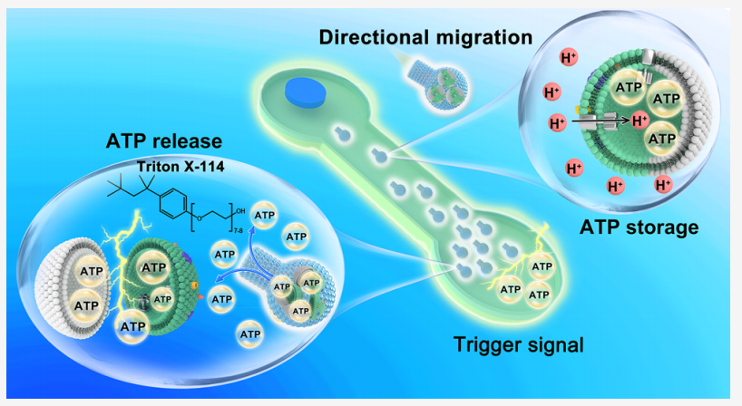

[Nanomotors]
期刊：Journal of the American Chemical Society
Rotary F0F1-ATP Synthase-Driven Flasklike Pentosan Colloidal Motors with ATP Synthesis and Storage
摘要：文章介绍了一种叶绿体衍生的“FoF1-ATPase motor-propelled flasklike pentosan
colloidal motor (FPCM)” 的分层组装，其具有合成、存储和触发生物能量货币ATP的能力。通过结合软模板水热聚合和真空注入含有FoF1-ATPase的脂质体来制备。注入酸性缓冲溶液，质子驱动FoF1-ATPase的旋转，从而促进FPCMs的运动，并伴随内部ATP的合成和存储。
示意图：

实验方法：
PREPARATION OF THE RBMPS.
Chloroplasts were isolated from fresh spinach using a method similar to that reported previously. Briefly, 500 g of fresh spinach were grated with quartz sand in a mortar and added to a chloroplast buffer containing 0.4 M sucrose, 0.01 M KCl, 0.01 M Na2HPO4, 0.03 M KH2PO4, and 2 mM vitamin C in 40 ml. The homogenate was collected in a centrifuge tube and filtered through eight layers of cotton gauze. The supernatant was collected after centrifuging the filtrate at 3000 g for 2 min. Gradient density centrifugation was used to separate intact chloroplasts during the second centrifuge filtrate. The intact chloroplasts were washed three times with 10 ml of buffer, and a green suspension was obtained. The recycled chloroplast pellet was suspended in a solution containing 10 mM HEPES-KOH (pH=7.8) and 5 mM MgCl2 and allowed to stand for 15 min in the dark on ice to lyse the chloroplasts. Thylakoids were sedimented by centrifugation at 3000 g for 3 min and resuspended in a solution containing 50 mM HEPES-KOH (pH 7.5), 100 mM sorbitol, and 10 mM MgCl2. The stacked thylakoids were homogenized in a glass homogenizer for 5 min in an ice bath. The resulting mixed solution was extruded through porous 800 nm polycarbonate membrane filters to remove larger thylakoid fragments. Then thylakoid fragments were further mechanically extruded through a porous polycarbonate membrane with a diameter of 100 nm for fabrication of thylakoid vesicles. The recovered thylakoid vesicles were then uniformly mixed with phospholipid vesicles and extruded through a 100 nm polycarbonate membrane 21 times to obtain RBMPs. Finally, the clear light green solution was stored in the dark at 4 °C.
PREPARATION OF THE FPCMS.
The flasklike colloidal motors were prepared using a previously established method. In brief, a clear solution was formed by slowly stirring 0.0365 g of sodium oleate (SO) and 0.0435 g of Poly (ethylene glycol)-block-poly (propylene glycol)-block-poly-(ethylene glycol) (EO20-PO70-EO20, P123) in 20 mL of deionized water. Next, 40 mL of a solution containing 3 g of ribose was added and the resulting mixture was stirred for 30 minutes before being transferred to a 100 mL autoclave and placed in an oven at 160 °C for 10 hours. The resulting products were collected, washed by centrifugation, and then dried and stored as flask-like pentosan colloidal particles. To prepare the FPCMs, 0.5 mg of the particles were added to a solution containing 9 mg of RBMPs in 1 mL of ADP buffer solution. This solution was placed in a vacuum chamber at a pressure of -0.1 bar for 30 minutes and then ultrasonicated for 1 hour at 0 °C. The resulting motors were washed three times with ADP buffer solution by centrifugation and finally stored in the same solution at 4 °C.